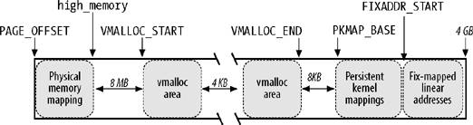

{% include JB/setup %}
{% raw %}
<div>


<a name="understandlk-CHP-8-SECT-3"></a>
<h3 class="docSection1Title">8.3. Noncontiguous Memory Area Management</h3><a name="IDX-CHP-8-2254"></a>
<a name="IDX-CHP-8-2255"></a>
<a name="IDX-CHP-8-2256"></a>
<a name="IDX-CHP-8-2257"></a>
<a name="IDX-CHP-8-2258"></a>
<a name="IDX-CHP-8-2259"></a>
<a name="IDX-CHP-8-2260"></a>
<p class="docText1">We already know that it is preferable to map memory areas into sets of contiguous page frames, thus making better use of the cache and achieving lower average memory access times. Nevertheless, if the requests for memory areas are infrequent, it makes sense to consider an allocation scheme based on noncontiguous page frames accessed through contiguous linear addresses<a name="IDX-CHP-8-2261"></a> 
. The main advantage of this schema is to avoid external fragmentation, while the disadvantage is that it is necessary to fiddle with the kernel Page Tables. Clearly, the size of a noncontiguous memory area must be a multiple of 4,096. Linux uses noncontiguous memory areas in several ways  for instance, to allocate data structures for active swap areas (see the section "<a class="pcalibre5 docLink pcalibre1" href="understandlk-CHP-17-SECT-4.html#understandlk-CHP-17-SECT-4.4">Activating and Deactivating a Swap Area</a>" in <a class="pcalibre5 docLink pcalibre1" href="understandlk-CHP-17.html#understandlk-CHP-17">Chapter 17</a>), to allocate space for a module (see Appendix B), or to allocate buffers to some I/O drivers. Furthermore, noncontiguous memory areas provide yet another way to make use of high memory page frames (see the later section "<a class="pcalibre5 docLink pcalibre1" href="#understandlk-CHP-8-SECT-3.3">Allocating a Noncontiguous Memory Area</a>").</p>
<a name="understandlk-CHP-8-SECT-3.1"></a>
<h4 class="docSection2Title">8.3.1. Linear Addresses of Noncontiguous Memory Areas</h4><a name="IDX-CHP-8-2262"></a>
<a name="IDX-CHP-8-2263"></a>
<p class="docText1">To find a free range of linear addresses, we can look in the area starting from <tt class="calibre25">PAGE_OFFSET</tt> (usually <tt class="calibre25">0xc0000000</tt>, the beginning of the fourth gigabyte). <a class="pcalibre5 docLink pcalibre1" href="#understandlk-CHP-8-FIG-7">Figure 8-7</a> shows how the fourth gigabyte linear addresses are used:</p>
<ul class="calibre11"><li class="calibre12"><p class="docText1">The beginning of the area includes the linear addresses that map the first 896 MB of RAM (see the section "<a class="pcalibre5 docLink pcalibre1" href="understandlk-CHP-2-SECT-5.html#understandlk-CHP-2-SECT-5.4">Process Page Tables</a>" in <a class="pcalibre5 docLink pcalibre1" href="understandlk-CHP-2.html#understandlk-CHP-2">Chapter 2</a>); the linear address that corresponds to the end of the directly mapped physical memory is stored in the <tt class="calibre25">high_memory</tt> variable.</p></li><li class="calibre12"><p class="docText1">The end of the area contains the fix-mapped linear addresses<a name="IDX-CHP-8-2264"></a> 
 (see the section "<a class="pcalibre5 docLink pcalibre1" href="understandlk-CHP-2-SECT-5.html#understandlk-CHP-2-SECT-5.6">Fix-Mapped Linear Addresses</a>" in <a class="pcalibre5 docLink pcalibre1" href="understandlk-CHP-2.html#understandlk-CHP-2">Chapter 2</a>).</p></li><li class="calibre12"><p class="docText1">Starting from <tt class="calibre25">PKMAP_BASE</tt> we find the linear addresses used for the persistent kernel mapping of high-memory page frames (see the section "<a class="pcalibre5 docLink pcalibre1" href="understandlk-CHP-8-SECT-1.html#understandlk-CHP-8-SECT-1.6">Kernel Mappings of High-Memory Page Frames</a>" earlier in this chapter).</p></li><li class="calibre12"><p class="docText1">The remaining linear addresses can be used for noncontiguous memory areas. A safety interval of size 8 MB (macro <tt class="calibre25">VMALLOC_OFFSET</tt>) is inserted between the end of the physical memory mapping and the first memory area; its purpose is to "capture" out-of-bounds memory accesses. For the same reason, additional safety intervals of size 4 KB are inserted to separate noncontiguous memory areas.</p></li></ul>
<a name="understandlk-CHP-8-FIG-7"></a><p class="calibre14"><center class="calibre8">
<h5 class="docFigureTitle">Figure 8-7. The linear address interval starting from PAGE_OFFSET</h5>
</center></p><br class="calibre7"/>
<p class="docText1">The <tt class="calibre25">VMALLOC_START</tt> macro defines the starting address of the linear space reserved for noncontiguous memory areas, while <tt class="calibre25">VMALLOC_END</tt> defines its ending address.</p>
<a name="understandlk-CHP-8-SECT-3.2"></a>
<h4 class="docSection2Title">8.3.2. Descriptors of Noncontiguous Memory Areas</h4><a name="IDX-CHP-8-2265"></a>
<a name="IDX-CHP-8-2266"></a>
<a name="IDX-CHP-8-2267"></a>
<a name="IDX-CHP-8-2268"></a>
<a name="IDX-CHP-8-2269"></a>
<a name="IDX-CHP-8-2270"></a>
<a name="IDX-CHP-8-2271"></a>
<a name="IDX-CHP-8-2272"></a>
<a name="IDX-CHP-8-2273"></a>
<p class="docText1">Each noncontiguous memory area is associated with a descriptor of type <tt class="calibre25">vm_struct</tt>, whose fields are listed in <a class="pcalibre5 docLink pcalibre1" href="#understandlk-CHP-8-TABLE-13">Table 8-13</a>.</p>
<a name="understandlk-CHP-8-TABLE-13"></a><p class="calibre14"><table cellspacing="0" frame="hsides" rules="all" cellpadding="4" width="100%" class="calibre15"><caption class="calibre33"><h5 class="docFigureTitle">Table 8-13. The fields of the vm_struct descriptor</h5></caption><colgroup class="calibre16"><col class="calibre17"/><col class="calibre17"/><col class="calibre17"/></colgroup><thead class="calibre18"><tr class="calibre34"><th class="thead" scope="col"><p class="docText1"><span class="calibre5">Type</span></p></th><th class="thead" scope="col"><p class="docText1"><span class="calibre5">Name</span></p></th><th class="thead" scope="col"><p class="docText1"><span class="calibre5">Description</span></p></th></tr></thead><tr class="calibre2"><td class="docTableCell"><p class="docText2"><tt class="calibre25">void *</tt></p></td><td class="docTableCell"><p class="docText2"><tt class="calibre25">addr</tt></p></td><td class="docTableCell"><p class="docText2">Linear address of the first memory cell of the area</p></td></tr><tr class="calibre2"><td class="docTableCell"><p class="docText2"><tt class="calibre25">unsigned long</tt></p></td><td class="docTableCell"><p class="docText2"><tt class="calibre25">size</tt></p></td><td class="docTableCell"><p class="docText2">Size of the area plus 4,096 (inter-area safety interval)</p></td></tr><tr class="calibre2"><td class="docTableCell"><p class="docText2"><tt class="calibre25">unsigned long</tt></p></td><td class="docTableCell"><p class="docText2"><tt class="calibre25">flags</tt></p></td><td class="docTableCell"><p class="docText2">Type of memory mapped by the noncontiguous memory area</p></td></tr><tr class="calibre2"><td class="docTableCell"><p class="docText2"><tt class="calibre25">struct page **</tt></p></td><td class="docTableCell"><p class="docText2"><tt class="calibre25">pages</tt></p></td><td class="docTableCell"><p class="docText2">Pointer to array of <tt class="calibre25">nr_pages</tt> pointers to page descriptors<a name="IDX-CHP-8-2274"></a>
</p></td></tr><tr class="calibre2"><td class="docTableCell"><p class="docText2">unsigned int</p></td><td class="docTableCell"><p class="docText2">nr_pages</p></td><td class="docTableCell"><p class="docText2">Number of pages filled by the area</p></td></tr><tr class="calibre2"><td class="docTableCell"><p class="docText2">unsigned long</p></td><td class="docTableCell"><p class="docText2">phys_addr</p></td><td class="docTableCell"><p class="docText2">Set to 0 unless the area has been created to map the I/O shared memory of a hardware device</p></td></tr><tr class="calibre2"><td class="docTableCell"><p class="docText2">struct vm_struct *</p></td><td class="docTableCell"><p class="docText2">next</p></td><td class="docTableCell"><p class="docText2">Pointer to next <tt class="calibre25">vm_struct</tt> structure</p></td></tr></table></p><br class="calibre7"/>
<p class="docText1">These descriptors are inserted in a simple list by means of the <tt class="calibre25">next</tt> field; the address of the first element of the list is stored in the <tt class="calibre25">vmlist</tt> variable. Accesses to this list are protected by means of the <tt class="calibre25">vmlist_lock</tt> read/write spin lock. The <tt class="calibre25">flags</tt> field identifies the type of memory mapped by the area: <tt class="calibre25">VM_ALLOC</tt> for pages obtained by means of <tt class="calibre25">vmalloc( )</tt>, <tt class="calibre25">VM_MAP</tt> for already allocated pages mapped by means of <tt class="calibre25">vmap()</tt> (see the next section), and <tt class="calibre25">VM_IOREMAP</tt> for on-board memory of hardware devices mapped by means of <tt class="calibre25">ioremap( )</tt> (see <a class="pcalibre5 docLink pcalibre1" href="understandlk-CHP-13.html#understandlk-CHP-13">Chapter 13</a>).</p>
<p class="docText1">The <tt class="calibre25">get_vm_area( )</tt> function looks for a free range of linear addresses between <tt class="calibre25">VMALLOC_START</tt> and <tt class="calibre25">VMALLOC_END</tt>. This function acts on two parameters: the size (<tt class="calibre25">size</tt>) in bytes of the memory region to be created, and a flag (<tt class="calibre25">flag</tt>) specifying the type of region (see above). The steps performed are the following:</p>
<div class="calibre44"><ol class="docList1" type="1"><li class="calibre12"><div class="calibre45"><p class="docList">Invokes <tt class="calibre25">kmalloc( )</tt> to obtain a memory area for the new descriptor of type <tt class="calibre25">vm_struct</tt>.</p></div></li><li class="calibre12"><div class="calibre45"><p class="docList">Gets the <tt class="calibre25">vmlist_lock</tt> lock for writing and scans the list of descriptors of type <tt class="calibre25">vm_struct</tt> looking for a free range of linear addresses that includes at least <tt class="calibre25">size + 4096</tt> addresses (4096 is the size of the safety interval between the memory areas).</p></div></li><li class="calibre12"><div class="calibre45"><p class="docList">If such an interval exists, the function initializes the fields of the descriptor, releases the <tt class="calibre25">vmlist_lock</tt> lock, and terminates by returning the initial address of the noncontiguous memory area.</p></div></li><li class="calibre12"><div class="calibre45"><p class="docList">Otherwise, <tt class="calibre25">get_vm_area( )</tt> releases the descriptor obtained previously, releases the <tt class="calibre25">vmlist_lock</tt> lock, and returns <tt class="calibre25">NULL</tt>.</p></div></li></ol></div>
<a name="understandlk-CHP-8-SECT-3.3"></a>
<h4 class="docSection2Title">8.3.3. Allocating a Noncontiguous Memory Area</h4><a name="IDX-CHP-8-2275"></a>
<a name="IDX-CHP-8-2276"></a>
<a name="IDX-CHP-8-2277"></a>
<a name="IDX-CHP-8-2278"></a>
<a name="IDX-CHP-8-2279"></a>
<a name="IDX-CHP-8-2280"></a>
<p class="docText1">The <tt class="calibre25">vmalloc( )</tt> function allocates a noncontiguous memory area to the kernel. The parameter <tt class="calibre25">size</tt> denotes the size of the requested area. If the function is able to satisfy the request, it then returns the initial linear address of the new area; otherwise, it returns a <tt class="calibre25">NULL</tt> pointer:</p>
<pre class="calibre27">
void * vmalloc(unsigned long size)
{
    struct vm_struct *area;
    struct page **pages;
    unsigned int array_size, i;
    size = (size + PAGE_SIZE - 1) &amp; PAGE_MASK;
    area = get_vm_area(size, VM_ALLOC);
    if (!area)
        return NULL;
    area-&gt;nr_pages = size &gt;&gt; PAGE_SHIFT;
    array_size = (area-&gt;nr_pages * sizeof(struct page *));
    area-&gt;pages = pages = kmalloc(array_size, GFP_KERNEL);
    if (!area_pages) {
        remove_vm_area(area-&gt;addr);
        kfree(area);
        return NULL;
    }
    memset(area-&gt;pages, 0, array_size);
    for (i=0; i&lt;area-&gt;nr_pages; i++) {
        area-&gt;pages[i] = alloc_page(GFP_KERNEL|_ _GFP_HIGHMEM);
        if (!area-&gt;pages[i]) {
            area-&gt;nr_pages = i;
    fail:   vfree(area-&gt;addr);
            return NULL;
       }
    }
    if (map_vm_area(area, _ _pgprot(0x63), &amp;pages))
        goto fail;
    return area-&gt;addr;
}</pre><br class="calibre7"/>
<p class="docText1">The function starts by rounding up the value of the <tt class="calibre25">size</tt> parameter to a multiple of 4,096 (the page frame size). Then <tt class="calibre25">vmalloc( )</tt> invokes <tt class="calibre25">get_vm_area( )</tt>, which creates a new descriptor and returns the linear addresses assigned to the memory area. The <tt class="calibre25">flags</tt> field of the descriptor is initialized with the <tt class="calibre25">VM_ALLOC</tt> flag, which means that the noncontiguous page frames will be mapped into a linear address range by means of the <tt class="calibre25">vmalloc( )</tt> function. Then the <tt class="calibre25">vmalloc( )</tt> function invokes <tt class="calibre25">kmalloc( )</tt> to request a group of contiguous page frames large enough to contain an array of page descriptor pointers. The <tt class="calibre25">memset( )</tt> function is invoked to set all these pointers to <tt class="calibre25">NULL</tt>. Next the <tt class="calibre25">alloc_page( )</tt> function is called repeatedly, once for each of the <tt class="calibre25">nr_pages</tt> of the region, to allocate a page frame and store the address of the corresponding page descriptor in the <tt class="calibre25">area-&gt;pages</tt> array. Observe that using the <tt class="calibre25">area-&gt;pages</tt> array is necessary because the page frames could belong to the <tt class="calibre25">ZONE_HIGHMEM</tt> memory zone, thus right now they are not necessarily mapped to a linear address.</p>
<p class="docText1">Now comes the tricky part. Up to this point, a fresh interval of contiguous linear addresses has been obtained and a group of noncontiguous page frames has been allocated to map these linear addresses. The last crucial step consists of fiddling with the page table entries used by the kernel to indicate that each page frame allocated to the noncontiguous memory area is now associated with a linear address included in the interval of contiguous linear addresses yielded by <tt class="calibre25">vmalloc( )</tt>. This is what <tt class="calibre25">map_vm_area( )</tt> does.</p>
<p class="docText1">The <tt class="calibre25">map_vm_area( )</tt> function uses three parameters:</p>
<dl class="docText1"><dt class="calibre7"><br class="calibre7"/><p class="calibre14"><span class="docPubcolor"><span class="docPubcolor"><span class="docMonofont">area</span></span></span></p></dt>
<dd class="calibre20"><p class="docList">The pointer to the <tt class="calibre25">vm_struct</tt> descriptor of the area.</p></dd><dt class="calibre7"><br class="calibre7"/><p class="calibre14"><span class="docPubcolor"><span class="docPubcolor"><span class="docMonofont">prot</span></span></span></p></dt>
<dd class="calibre20"><p class="docList">The protection bits of the allocated page frames. It is always set to <tt class="calibre25">0x63</tt>, which corresponds to <tt class="calibre25">Present</tt>, <tt class="calibre25">Accessed</tt>, <tt class="calibre25">Read/Write</tt>, and <tt class="calibre25">Dirty</tt>.</p></dd><dt class="calibre7"><br class="calibre7"/><p class="calibre14"><span class="docPubcolor"><span class="docPubcolor"><span class="docMonofont">pages</span></span></span></p></dt>
<dd class="calibre20"><p class="docList">The address of a variable pointing to an array of pointers to page descriptors (thus, <tt class="calibre25">struct page ***</tt> is used as the data type!).</p></dd></dl>
<p class="docText1">The function starts by assigning the linear addresses of the start and end of the area to the <tt class="calibre25">address</tt> and <tt class="calibre25">end</tt> local variables, respectively:</p>
<pre class="calibre27">
address = area-&gt;addr;
end = address + (area-&gt;size - PAGE_SIZE);</pre><br class="calibre7"/>
<p class="docText1">Remember that <tt class="calibre25">area-&gt;size</tt> stores the actual size of the area plus the 4 KB inter-area safety interval. The function then uses the <tt class="calibre25">pgd_offset_k</tt> macro to derive the entry in the master kernel Page Global Directory related to the initial linear address of the area; it then acquires the kernel Page Table spin lock:</p>
<pre class="calibre27">
pgd = pgd_offset_k(address);
spin_lock(&amp;init_mm.page_table_lock);</pre><br class="calibre7"/>
<p class="docText1">The function then executes the following cycle:</p>
<pre class="calibre27">
int ret = 0;
for (i = pgd_index(address); i &lt; pgd_index(end-1); i++) {
    pud_t *pud = pud_alloc(&amp;init_mm, pgd, address);
    ret = -ENOMEM;
    if (!pud)
        break;
    next = (address + PGDIR_SIZE) &amp; PGDIR_MASK;
    if (next &lt; address || next &gt; end)
        next = end;
    if (map_area_pud(pud, address, next, prot, pages))
        break;
    address = next;
    pgd++;
    ret = 0;
}
spin_unlock(&amp;init_mm.page_table_lock);
flush_cache_vmap((unsigned long)area-&gt;addr, end);
return ret;</pre><br class="calibre7"/>
<p class="docText1">In each cycle, it first invokes <tt class="calibre25">pud_alloc( )</tt> to create a Page Upper Directory for the new area and writes its physical address in the right entry of the kernel Page Global Directory. It then calls <tt class="calibre25">map_area_pud( )</tt> to allocate all the page tables associated with the new Page Upper Directory. It adds the size of the range of linear addresses spanned by a single Page Upper Directorythe constant 2<sup class="calibre37">30</sup> if PAE is enabled, 2<sup class="calibre37">22</sup> otherwiseto the current value of <tt class="calibre25">address</tt>, and it increases the pointer <tt class="calibre25">pgd</tt> to the Page Global Directory.</p>
<p class="docText1">The cycle is repeated until all Page Table entries referring to the noncontiguous memory area are set up.</p>
<p class="docText1">The <tt class="calibre25">map_area_pud( )</tt> function executes a similar cycle for all the page tables that a Page Upper Directory points to:</p>
<pre class="calibre27">
do {
    pmd_t * pmd = pmd_alloc(&amp;init_mm, pud, address);
    if (!pmd)
        return -ENOMEM;
    if (map_area_pmd(pmd, address, end-address, prot, pages))
        return -ENOMEM;
    address = (address + PUD_SIZE) &amp; PUD_MASK;
    pud++;
} while (address &lt; end);</pre><br class="calibre7"/>
<p class="docText1">The <tt class="calibre25">map_area_pmd( )</tt> function executes a similar cycle for all the Page Tables that a Page Middle Directory points to:</p>
<pre class="calibre27">
do {
    pte_t * pte = pte_alloc_kernel(&amp;init_mm, pmd, address);
    if (!pte)
        return -ENOMEM;
    if (map_area_pte(pte, address, end-address, prot, pages))
        return -ENOMEM;
    address = (address + PMD_SIZE) &amp; PMD_MASK;
    pmd++;
} while (address &lt; end);</pre><br class="calibre7"/>
<p class="docText1">The <tt class="calibre25">pte_alloc_kernel( )</tt> function (see the section "<a class="pcalibre5 docLink pcalibre1" href="understandlk-CHP-2-SECT-5.html#understandlk-CHP-2-SECT-5.2">Page Table Handling</a>" in <a class="pcalibre5 docLink pcalibre1" href="understandlk-CHP-2.html#understandlk-CHP-2">Chapter 2</a>) allocates a new Page Table and updates the corresponding entry in the Page Middle Directory. Next, <tt class="calibre25">map_area_pte( )</tt> allocates all the page frames corresponding to the entries in the Page Table. The value of <tt class="calibre25">address</tt> is increased by 2<sup class="calibre37">22</sup>the size of the linear address interval spanned by a single Page Tableand the cycle is repeated.</p>
<p class="docText1">The main cycle of <tt class="calibre25">map_area_pte( )</tt> is:</p>
<pre class="calibre27">
do {
    struct page * page = **pages;
    set_pte(pte, mk_pte(page, prot));
    address += PAGE_SIZE;
    pte++;
    (*pages)++;
} while (address &lt; end);</pre><br class="calibre7"/>
<p class="docText1">The page descriptor address <tt class="calibre25">page</tt> of the page frame to be mapped is read from the array's entry pointed to by the variable at address <tt class="calibre25">pages</tt>. The physical address of the new page frame is written into the Page Table by the <tt class="calibre25">set_pte</tt> and <tt class="calibre25">mk_pte</tt> macros. The cycle is repeated after adding the constant 4,096 (the length of a page frame) to <tt class="calibre25">address</tt>.</p>
<p class="docText1">Notice that the Page Tables of the current process are not touched by <tt class="calibre25">map_vm_area( )</tt>. Therefore, when a process in Kernel Mode accesses the noncontiguous memory area, a Page Fault occurs, because the entries in the process's Page Tables corresponding to the area are null. However, the Page Fault handler checks the faulty linear address against the master kernel Page Tables (which are <tt class="calibre25">init_mm.pgd</tt> Page Global Directory and its child page tables; see the section "<a class="pcalibre5 docLink pcalibre1" href="understandlk-CHP-2-SECT-5.html#understandlk-CHP-2-SECT-5.5">Kernel Page Tables</a>" in <a class="pcalibre5 docLink pcalibre1" href="understandlk-CHP-2.html#understandlk-CHP-2">Chapter 2</a>). Once the handler discovers that a master kernel Page Table includes a non-null entry for the address, it copies its value into the corresponding process's Page Table entry and resumes normal execution of the process. This mechanism is described in the section "<a class="pcalibre5 docLink pcalibre1" href="understandlk-CHP-9-SECT-4.html#understandlk-CHP-9-SECT-4">Page Fault Exception Handler</a>" in <a class="pcalibre5 docLink pcalibre1" href="understandlk-CHP-9.html#understandlk-CHP-9">Chapter 9</a>.</p>
<p class="docText1">Beside the <tt class="calibre25">vmalloc( )</tt> function, a noncontiguous memory area can be allocated by the <tt class="calibre25">vmalloc_32( )</tt> function, which is very similar to <tt class="calibre25">vmalloc( )</tt> but only allocates page frames from the <tt class="calibre25">ZONE_NORMAL</tt> and <tt class="calibre25">ZONE_DMA</tt> memory zones.</p>
<p class="docText1">Linux 2.6 also features a <tt class="calibre25">vmap( )</tt> function, which maps page frames already allocated in a noncontiguous memory area: essentially, this function receives as its parameter an array of pointers to page descriptors, invokes <tt class="calibre25">get_vm_area( )</tt> to get a new <tt class="calibre25">vm_struct</tt> descriptor, and then invokes <tt class="calibre25">map_vm_area( )</tt> to map the page frames. The function is thus similar to <tt class="calibre25">vmalloc( )</tt>, but it does not allocate page frames.</p>
<a name="understandlk-CHP-8-SECT-3.4"></a>
<h4 class="docSection2Title">8.3.4. Releasing a Noncontiguous Memory Area</h4><a name="IDX-CHP-8-2281"></a>
<a name="IDX-CHP-8-2282"></a>
<a name="IDX-CHP-8-2283"></a>
<a name="IDX-CHP-8-2284"></a>
<a name="IDX-CHP-8-2285"></a>
<a name="IDX-CHP-8-2286"></a>
<a name="IDX-CHP-8-2287"></a>
<a name="IDX-CHP-8-2288"></a>
<a name="IDX-CHP-8-2289"></a>
<a name="IDX-CHP-8-2290"></a>
<a name="IDX-CHP-8-2291"></a>
<a name="IDX-CHP-8-2292"></a>
<a name="IDX-CHP-8-2293"></a>
<a name="IDX-CHP-8-2294"></a>
<a name="IDX-CHP-8-2295"></a>
<a name="IDX-CHP-8-2296"></a>
<p class="docText1">The <tt class="calibre25">vfree( )</tt> function releases noncontiguous memory areas created by <tt class="calibre25">vmalloc( )</tt> or <tt class="calibre25">vmalloc_32( )</tt>, while the <tt class="calibre25">vunmap( )</tt> function releases memory areas created by <tt class="calibre25">vmap( )</tt>. Both functions have one parameterthe address of the initial linear address of the area to be released; they both rely on the <tt class="calibre25">_ _vunmap( )</tt> function to do the real work.</p>
<p class="docText1">The <tt class="calibre25">_ _vunmap( )</tt> function receives two parameters: the address <tt class="calibre25">addr</tt> of the initial linear address of the area to be released, and the flag <tt class="calibre25">deallocate_pages</tt>, which is set if the page frames mapped in the area should be released to the zoned page frame allocator (<tt class="calibre25">vfree( )</tt>'s invocation), and cleared otherwise (<tt class="calibre25">vunmap( )</tt>'s invocation). The function performs the following operations:</p>
<div class="calibre44"><ol class="docList1" type="1"><li class="calibre12"><div class="calibre45"><p class="docList">Invokes the <tt class="calibre25">remove_vm_area( )</tt> function to get the address <tt class="calibre25">area</tt> of the <tt class="calibre25">vm_struct</tt> descriptor and to clear the kernel's page table entries corresponding to the linear address in the noncontiguous memory area.</p></div></li><li class="calibre12"><div class="calibre45"><p class="docList">If the <tt class="calibre25">deallocate_pages</tt> flag is set, it scans the <tt class="calibre25">area-&gt;pages</tt> array of pointers to the page descriptor; for each element of the array, invokes the <tt class="calibre25">_ _free_page( )</tt> function to release the page frame to the zoned page frame allocator. Moreover, executes <tt class="calibre25">kfree(area-&gt;pages)</tt> to release the array itself.</p></div></li><li class="calibre12"><div class="calibre45"><p class="docList">Invokes <tt class="calibre25">kfree(area)</tt> to release the <tt class="calibre25">vm_struct</tt> descriptor.</p></div></li></ol></div>
<p class="docText1">The <tt class="calibre25">remove_vm_area( )</tt> function performs the following cycle:</p>
<pre class="calibre27">
write_lock(&amp;vmlist_lock);
for (p = &amp;vmlist ; (tmp = *p) ; p = &amp;tmp-&gt;next) {
    if (tmp-&gt;addr == addr) {
        unmap_vm_area(tmp);
        *p = tmp-&gt;next;
        break;
    }
}
write_unlock(&amp;vmlist_lock);
return tmp;</pre><br class="calibre7"/>
<p class="docText1">The area itself is released by invoking <tt class="calibre25">unmap_vm_area( )</tt>. This function acts on a single parameter, namely a pointer <tt class="calibre25">area</tt> to the <tt class="calibre25">vm_struct</tt> descriptor of the area. It executes the following cycle to reverse the actions performed by <tt class="calibre25">map_vm_area( )</tt>:</p>
<pre class="calibre27">
address = area-&gt;addr;
end = address + area-&gt;size;
pgd = pgd_offset_k(address);
for (i = pgd_index(address); i &lt;= pgd_index(end-1); i++) {
    next = (address + PGDIR_SIZE) &amp; PGDIR_MASK;
    if (next &lt;= address || next &gt; end)
        next = end;
    unmap_area_pud(pgd, address, next - address);
    address = next;
    pgd++;
}</pre><br class="calibre7"/>
<p class="docText1">In turn, <tt class="calibre25">unmap_area_pud( )</tt> reverses the actions of <tt class="calibre25">map_area_pud( )</tt> in the cycle:</p>
<pre class="calibre27">
do {
    unmap_area_pmd(pud, address, end-address);
    address = (address + PUD_SIZE) &amp; PUD_MASK;
    pud++;
} while (address &amp;&amp; (address &lt; end));</pre><br class="calibre7"/>
<p class="docText1">The <tt class="calibre25">unmap_area_pmd( )</tt> function reverses the actions of <tt class="calibre25">map_area_pmd( )</tt> in the cycle:</p>
<pre class="calibre27">
do {
    unmap_area_pte(pmd, address, end-address);
    address = (address + PMD_SIZE) &amp; PMD_MASK;
    pmd++;
} while (address &lt; end);</pre><br class="calibre7"/>
<p class="docText1">Finally, <tt class="calibre25">unmap_area_pte( )</tt> reverses the actions of <tt class="calibre25">map_area_pte( )</tt> in the cycle:</p>
<pre class="calibre27">
do {
    pte_t page = ptep_get_and_clear(pte);
    address += PAGE_SIZE;
    pte++;
    if (!pte_none(page) &amp;&amp; !pte_present(page))
        printk("Whee... Swapped out page in kernel page table\n");
} while (address &lt; end);</pre><br class="calibre7"/>
<p class="docText1">In every iteration of the cycle, the page table entry pointed to by <tt class="calibre25">pte</tt> is set to 0 by the <tt class="calibre25">ptep_get_and_clear</tt> macro.</p>
<p class="docText1">As for <tt class="calibre25">vmalloc( )</tt>, the kernel modifies the entries of the master kernel Page Global Directory and its child page tables (see the section "<a class="pcalibre5 docLink pcalibre1" href="understandlk-CHP-2-SECT-5.html#understandlk-CHP-2-SECT-5.5">Kernel Page Tables</a>" in <a class="pcalibre5 docLink pcalibre1" href="understandlk-CHP-2.html#understandlk-CHP-2">Chapter 2</a>), but it leaves unchanged the entries of the process page tables mapping the fourth gigabyte. This is fine because the kernel never reclaims Page Upper Directories, Page Middle Directories, and Page Tables rooted at the master kernel Page Global Directory.</p>
<p class="docText1">For instance, suppose that a process in Kernel Mode accessed a noncontiguous memory area that later got released. The process's Page Global Directory entries are equal to the corresponding entries of the master kernel Page Global Directory, thanks to the mechanism explained in the section "<a class="pcalibre5 docLink pcalibre1" href="understandlk-CHP-9-SECT-4.html#understandlk-CHP-9-SECT-4">Page Fault Exception Handler</a>" in <a class="pcalibre5 docLink pcalibre1" href="understandlk-CHP-9.html#understandlk-CHP-9">Chapter 9</a>; they point to the same Page Upper Directories, Page Middle Directories, and Page Tables. The <tt class="calibre25">unmap_area_pte( )</tt> function clears only the entries of the page tables (without reclaiming the page tables themselves). Further accesses of the process to the released noncontiguous memory area will trigger Page Faults because of the null page table entries. However, the handler will consider such accesses a bug, because the master kernel page tables<a name="IDX-CHP-8-2297"></a> 
 do not include valid entries.</p>
<a href="31071535.html"></a>
<br class="calibre7"/>

</div>

{% endraw %}

